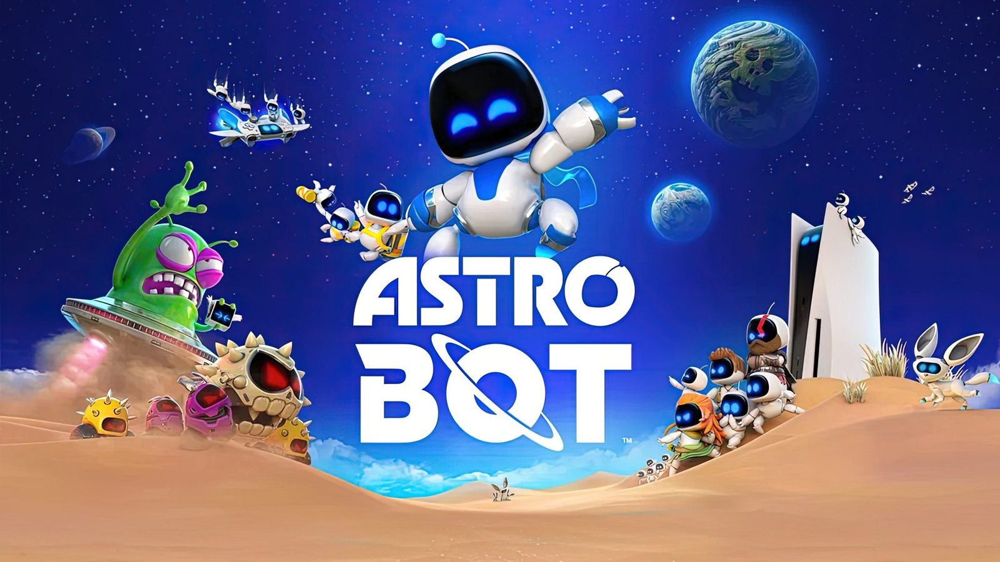

Unfortunately, gamers and influencers were unable to understand what happened.
Astro Bot took the Game of the Year award at The Game Awards 2024, and a good share of players and influencers are still trying to work out how that happened. For many it was an unexpected result, even a disappointing one. After all, how did a relatively simple, short game end up ahead of billion-dollar open worlds, cinematic narratives, ultra-realistic graphics and games with complex mechanics?

The competition was full of them, and it was especially heavy this year: Black Myth: Wukong brought impeccable graphics and art direction, as well as introducing Chinese mythology as a viable basis for a hit game even in the Western market; Metaphor: ReFantazio delivered everything Studio Zero has to offer in narrative and gameplay in a new package; Final Fantasy VII Rebirth continued the remake of the saga that marked a generation; and Elden Ring's expansion, Shadow of the Erdtree, showed that the impeccable quality of FromSoftware's productions can make a DLC go toe to toe with its competitors' full releases; and with singular mechanics and masterful execution, Balatro — made by a single developer — went head to head with the giants of the industry. Not to mention games like the Silent Hill remake, which were left out but would have been competitive in other years.
But Astro Bot's award was neither an accident nor a mistake. It was a clear message — a rebuke, really — to the AAA studios that dominate the market: get your house in order.
Swen Vincke's Rebuke
The award was announced by Swen Vincke, CEO of Larian Studios, who last year swept nearly everything with the success of Baldur's Gate 3. And he did not mince words in explaining what was going on:
"They made the game because they wanted to play something they themselves would love to play. They didn't make it to hit sales targets, increase market share or serve a brand. They didn't fill the game with unnecessary monetization. They put the game and the team first, and they knew success would follow as a consequence. They were driven by idealism and wanted players to have fun, and they realized that if the developers weren't having fun, nobody would."
Swen did not need to name names, but the criticism was out in the open. In recent years, Ubisoft, Activision Blizzard, EA and other colossi of the industry have become better known for mass layoffs, questionable financial strategies and failures than for the creativity of their games.
A Saturated Industry
To give a few examples, Ubisoft recently accumulated more than 1,700 layoffs in 18 months, even while reporting a gross profit of nearly €2.1 billion in 2023. In 2021, Robert A. Kotick, then CEO of Activision Blizzard, awarded himself some US$200 million for raising the company's share price — in the same year in which he laid off more than 800 employees, closed its French studio of more than 400 people and cut an estimated 190 staff from the e-sports team. That same year, Activision Blizzard hit a historic record for its games, reaching US$8.8 billion in annual revenue.
In truth, these are not problems exclusive to the videogame industry, but at this moment of crisis in the AAA studios' production model it becomes evident — not only in the industry's manoeuvres, but in the saturation of generic, uninspired games with sales below expectations. The Concord disaster, pulled from sale only two weeks after launch; Star Wars Outlaws' failure to reach meaningful sales; the fiasco of Skull and Bones, a game Ubisoft's CEO called "AAAA", which was also a sales failure. All games developed by hundreds of people, with multi-million budgets and high expectations, which on release fell behind games built by one, two or a dozen indie developers against the odds — but with the fervour and inspiration so many AAA studios have left behind.
Meanwhile, the indie market grows year after year, reaching 58% of all games sold and 48% of sales revenue in 2024. Larian Studios is a special case: an independent studio that produced one of the decade's biggest successes with Baldur's Gate 3. Through the success of its crowdfunding campaign, Vincke's company operated like a AAA in budget terms, but with the passion and creative freedom of the independent market — and the result speaks for itself. With 10 million copies sold as of February this year, that game alone outsold the combined annual result of major studios' releases — and it still took the award for Best Community Support at this same Game Awards, a year after launch.
Awards as a Dialogue
Within all this context, it is hard to think of a clearer, more direct way to dress down the AAA studios than Vincke's speech. Even so, the message struggled to get through to fans and influencers online, who expect the ceremony to deliver some form of "objectivity" in choosing the "best" game as Game of the Year. Here is the central point many missed: awards like The Game Awards do not exist to pick the "best game" objectively, like a mathematical ranking. They are the industry in dialogue with itself. Awards like the Oscars are valuable to their respective industry precisely because they carry out that dialogue.
When Parasite won in 2019, it was not only for its narrative talent. It was a message to Hollywood: East Asian cinema is growing in quality and relevance, exploring themes that matter to audiences — rising inequality, class conflict — while you grow complacent. In 2024, Godzilla Minus One took Best Visual Effects not because it had the most impressive or technologically advanced CGI, but because it proved that well-told stories on efficient budgets are the industry's way forward.
Such signals serve as valuable indications for studios, producers, directors and the industry as a whole. Sometimes they point to under-explored markets, sometimes to what is well or poorly regarded, sometimes to paths for new stories to be told. If it really is The Game Awards' intention to serve the videogame industry the way the Oscars serve Hollywood, that would be an enormously valuable gain — far beyond a mere celebration of the year's notable games and a prize for the biggest hits.
The Forgotten Audience
And what message was sent by awarding Astro Bot?
I think Vincke covered most of the important points: games produced with the game and the fun in first place, with management that looks less at its own bonuses and accounting results and more at the quality of the product delivered. Beyond that, I think Astro Bot's victory also draws our attention to a segment much forgotten by developers, with the possible exception of Nintendo: children.
It is funny to think that, if videogames consolidated themselves among children and adjacent to toys when the industry was revived by Nintendo itself with the NES in the mid-1980s, today so many games seek an adult audience with narratives coded in more mature terms. Obviously games have carried more adult stories for a very long time, and we still see children's games today — but the franchises that define the industry have definitively changed face and become more mature.
Today, while Roblox and Fortnite dominate the market through the game-as-a-service model and monetization via in-game item sales, single-player console games seem to ignore that audience. Astro Bot proves there is room — and demand — for creative, fun, accessible experiences aimed at younger players, which are still a success to some degree with adults. Focusing on that niche does not mean sacrificing quality, nor commercial success. Just look at developers like Nintendo: franchises like Mario and Zelda remain relevant because they understood the value of building intergenerational legacies. Ignoring such an audience may cost studios dearly in the medium and long term.
Grow Up
It would be genuinely hard to defend Astro Bot as "the best game of 2024." But it did not win on that criterion. It won as Game of the Year — an award that carries a powerful message, but which does not necessarily indicate "the best."
The AAA industry is saturated: multi-million budgets, enormous teams and sky-high expectations that frequently result in generic games, sales failures and mass layoffs. Audiences no longer want checklists of mechanics to be ticked off, battle passes and aggressive monetization. They want fun games, made with passion and purpose.
And to the gamer and the influencer throwing a tantrum online because their favourite game did not take the prize, here is my message: grow up. Awards like this one are valuable when they stop being just a pretty party and become a reflection of the industry and of what it needs in order to move forward. If videogames want to be taken seriously as art, we need to learn to look beyond our favourites and understand what these prizes actually mean. Astro Bot's win may have irritated a lot of people, but it may be the most positive sign for the future of games in a long time.
If The Game Awards really takes the direction I think it is taking, it could be far more valuable to the industry than simply assembling lists and rankings the way any YouTube channel could — only with a more expensive production. We will only know for certain by following the next ceremonies and seeing whether this is the path the award is on, or whether it was something that will mark 2024 alone.
// Note: This is a translated version of the original Portuguese text. The author will review and revise this translation.